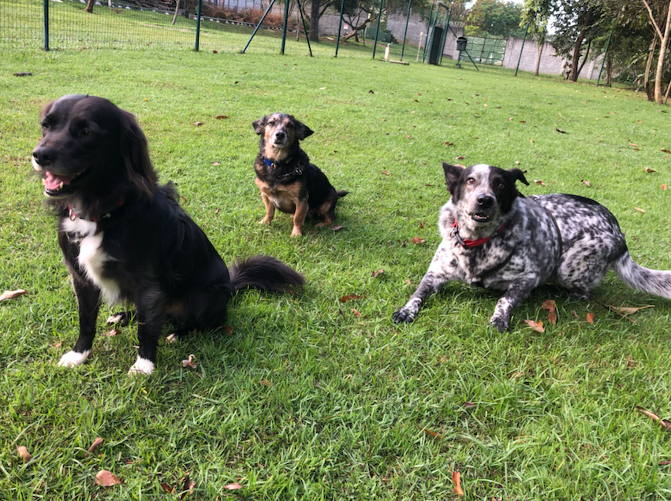

Personal Life
Hi, I'm Barbara :)
I'm from Brazil and completely in love with pets.
I have arrived in Canada few months ago. So... What am I doing here?
As you can see in my Resume page, I'm civil engineer and I worked for 10 years with constructions and project management.
However, I'm not the kind of person who enjoyes doing the same thing for too long (or living in the same place).
So I decided to start a new carreer from zero. But this challenge didn't seem to be that big, I wanted more: start a new carreer in a different country.
That's why we are here :)
But... who are we?
Me, my husband and our two dogs: Joca and Zeca (in fact we have three dogs, but one of them couldn't come with us because of his big size and now he lives with my parents-in-law.).
My Dogs
